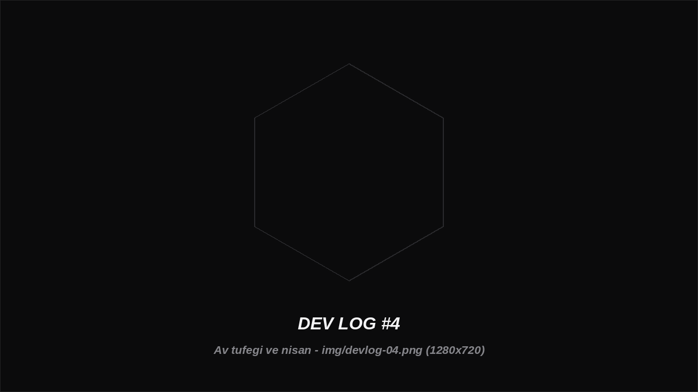

Av tüfeği ve nişan

Av tüfeği için ateş animasyonu üst gövde katmanına bağlandı; karakter yürürken veya dururken üst gövde ayrı animasyon oynatabiliyor.
Sıradaki iş: nişangâhın kameranın baktığı yere göre hizalanması ve basılı tutunca belirli aralıklarla ateş edilmesi.
- Ateş animasyonu üst gövde slotunda çalışıyor
- Silahın kamerayı takip etmesi üzerinde çalışılıyor
- Nişangâh (crosshair) planlandı